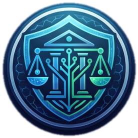

PDF · 17 PAGES
UJIP Hub71+ AI Pitch Deck
العرض الرسمي الذي يشرح المشكلة والحل والذكاء الأساسي ونطاق المنتج والـMVP والحوكمة والأمان والعملاء ونموذج الأعمال والتميّز والتوافق مع Hub71+ AI.

حمّل العرض الرسمي أو نسخة HTML القابلة للإرسال، وافتح الـMVP المباشر لتقديم تجربة متكاملة أمام Hub71+ AI أو أي جهة حكومية أو مستثمر.
العرض الرسمي الذي يشرح المشكلة والحل والذكاء الأساسي ونطاق المنتج والـMVP والحوكمة والأمان والعملاء ونموذج الأعمال والتميّز والتوافق مع Hub71+ AI.
نسخة HTML مستقلة وتفاعلية يمكن إرسالها أو فتحها مباشرة دون تثبيت، وتتضمن البحث الافتراضي الديناميكي وكشوف الخدمات والتحليل والتقرير.
التجربة الحالية المهيأة لتكون Website / Product URL في الطلب، مع انتقالات سينمائية وبريلودر وشروحات مطابقة للـPitch Deck ودعم كامل للأجهزة.
استكمال سيرة المؤسس والفريق والأدوار والملكية والتزام الانتقال، وإضافة معلومات التمويل والإيرادات أو التحقق السوقي وأي خطابات اهتمام إن وجدت.
الموقع والـHTML والبحث الديناميكي وكشوف الخدمات والتحليل والتقارير والحوكمة أصبحت جاهزة. تبقى معلومات لا يمكن افتراضها أو اختلاقها عن المؤسس والشركة والتحقق السوقي.